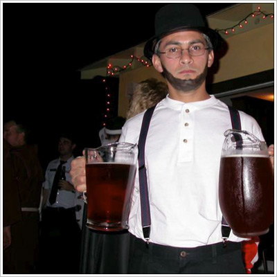

Hash with No Name
Run #1034, January 23, 2006
Hare: WIPOS
Location: Heritage Park, Glocester, RI
Weather: Mid 30’s, partly cloudy
Lads: Great at Giving Head, Dr WHO, Basket Boom Boom, Bondo Jovi, Amish Ithead, Dry Foot Fairy, Oozing.
Lasses: Cum Under Pubic Saw’er Squat, Trail Hoover.
Neither Lad nor Lass: Seamus, Ben.
The Run:
What a great night for a hash! Anticipation had been building for days, weeks, months even (ok, how about not at all) as it would be the birthday celebration of one of the most acclaimed, big, distinguished, eminent, famed, glorious, great, high powered, illustrious, immortal, important, large, laureate, lionized, notable, number one, numero uno, outstanding, popular, pre-eminent, prominent, renowned, revered, storied, and well-known Scottish poets, Robbie Burns. The morning broke with promises of up to 8 inches (same thing Oozing tells the ladies) of snow in northwest RI, but sadly the front moved through quickly leaving a disappointing 3 inches at best (again, like Oozing). Pathetic!
So excited to celebrate Robbie’s birthday were Bondo and Basket who arrived far too early, but apparently managed to occupy themselves until the pack arrived (strange, at the beer check they discussed seeing “Brokeback Mountain” together – could this be the start of an alternative relationship?). And what a sight the pack was! Kilts and beanies as far as the eye could see. Except for G@GH and Cum Under, who apparently thought they were above the rest of us coming dressed in standard garb. Pathetic! While waiting to be given the direction for the on-in, Basket reached towards his man purse/crotch and offered Cum Under a “wee nip.” All gave a sign of relief when up came a flask, as the alternative would surely make most sick.
After a few rounds of whiskey and a little Bondo brew the pack departed eastward into the park. The hare had decided to use staple yellow post-its to the trees to mark trail (which Dry Foot pondered using for his trail next week -pathetic!), which was sneaky as plenty of light-color lichen was around to lead the pack astray. By the way, did you clear the use of those post-its from work WIPOS?! The first check led us to a trail where the FRBs went right and left. Not hearing an on-on for some time, the hare recommended heading straight into the woods. The hare, giving hints?! Pathetic! After true trail was found we bushwhacked to a check where the pack headed north (at least left, not sure if left was north but let’s go with it). After bounding down the snow packed trail we arrived at a place I’m sure most hashers would feel at home, a trailer park. Or maybe a camper park, but let’s go with trailer park. Downhill we went from the reflector’d up mobile homes up to a river’s edge. Water? Snow? Cold? Great. Was WIPOS trying to get people wet in retaliation for falling into water in Oozing’s hash a few weeks ago? Only WIPOS knows, but the few, the brave, the manly (despite the kilts) decided it best to hop, skip and jump across the raging shiggy along true trail. The ladies (Cum Under, Oozing) followed trail a bit farther downstream to cross a bridge. Pathetic! Somewhere around here we managed to find the beer check which was located at “Shepard’s Hut.” How fitting. The first hashers to arrive dashed into the stone-walled hut to hide from the others, but of course this didn’t work. Basket attempted to ad-lib a song by replacing words with those of a Scottish theme, most laughed. Not at the song, but at Basket. The oddity continued - the beer check was rather quiet and “click” like. Dry Foot and G@GH talked about concealed weapons. WHO, Cum Under and SESYB talked about this year’s Dragon Boat theme. Bondo pissed uphill of the pack, like ususal. And Basket and Bondo went into a tale of them seeing Brokeback Mountain. No singing? Pathetic! After consuming some adult beverages the group carried on, managing to circle jerk through more campers until the main road was hit leading back to the cars. Pathetic!
The circle made up for some of the lack of singing as the hashit (G@GH for wearing tights) fired up a pathetic(!) rendition of the Engineer’s Dream which everyone took as a reason to sing whatever song they wanted. It gave most of the hashers aural (unfortunately not oral) pleasure to hear so many songs at once, and made it that much faster we could get to the on-on-on. Just before the group left, Hoover stated she would not be able to hare the hash next week (pathetic!), which most took as a sign of it being that “special” time of the month. Tampon song ensued, yadda yadda yadda. No Fawangi, lack of real snow, warm beer at the check, circle jerk trail, non biodegradable post-it notes. Total: +69.
The group proceeded to Chester’s where they were told that haggis would not be allowed into the establishment and that consumption would have to occur in the parking lot. Pathetic! Makes sense – does anyone really want the smell of haggis floating around? Basket had managed to keep the delicacy warm inside his cooler (how odd that a “cooler” could also keep things warm!) and after dumping on a jar of gravy the hash was licking their lips in anticipation of the wonderful treat. Wow, a few big words were in those last sentences. Sorry about that. Anyway – the few, the proud, those undisgusted by ground up beef innards and other various animals enjoyed the Basket-made meat product. As the hash slowly departed I’m sure that most wondered if Robbie Burns would have approved, and I’m sure some wondered – who is Robbie Burns again?! Pathetic!
On On

Amish It Head